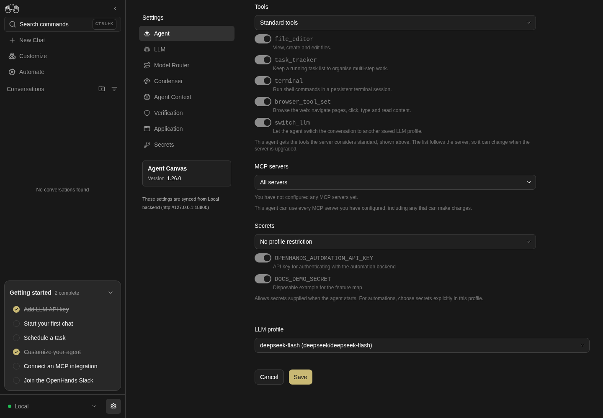
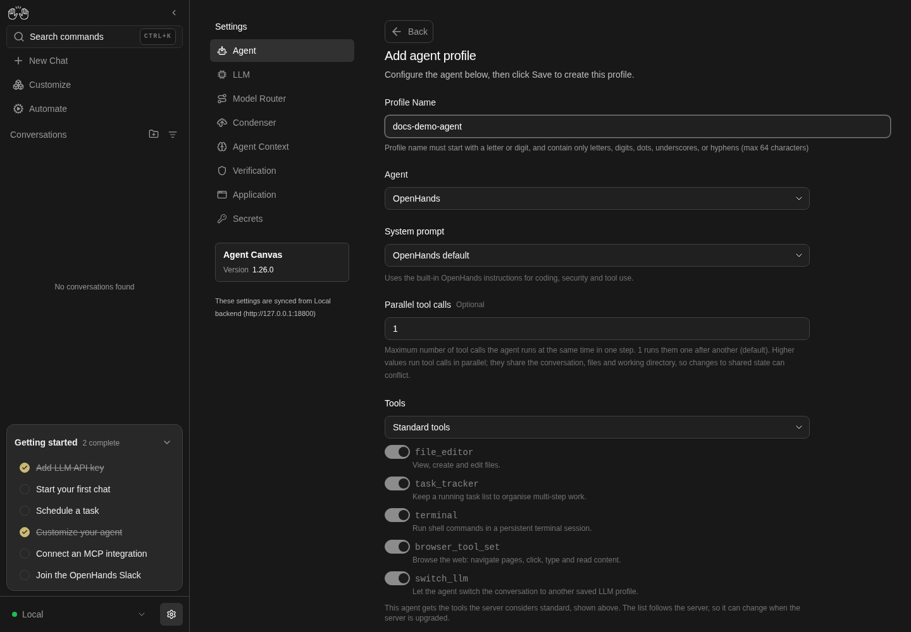

How to get to it
- Sidebar settings gear (
backend-selector-settings-link): on desktop/settingsredirects to/settings/agents. In the settings navigation, Agent (sidebar-settings-/settings/agents). - Direct URL
/settings/agents; the retired/settings/agentredirects there. - Command menu (
Control+k/Meta+korcommand-menu-trigger): Agent settings. - Getting-started checklist Customize your agent and the composer + → Switch agent profile → Manage agent profiles (both mapped in F09/F05).
- On Home, the composer + → Switch agent profile list activates a profile like Set as active (F05.agent-profile-switch).
- All per-profile actions are in the row's
...menu (agent-profile-menu-trigger). The editor has no route: it replaces the list in place.
Before you start
Start with the common launch and health checks, then follow this family’s preconditions in order. Recipes share the fixtures and state named below.
Preconditions:
- Baseline state (launched, doctored,
onboard --skipdone) on a fresh run.F13.editor-no-llmmust run beforecontrol-openhands llm preset deepseek; everything fromF13.stale-llm-refon needs the preset (deepseek-flashactive,deepseek-pro). - A fresh run has one profile,
default, active, whose LLM profile isdefault(which does not exist).control-openhands api GET /api/agent-profilesshows it. F13.mcp-scopeneeds two configured MCP servers. Arrange them withcontrol-openhands api POST /api/settings/mcp/qa_mcp_a --data '{"transport":"stdio","command":"qa-no-such-command","enabled":false}' --writeand the same forqa_mcp_b.F13.acp-conversationneeds the provider's agent CLI and an approved account;F13.cloud-read-onlyneeds a Cloud organization member login. Both are blocked here.- Dropdowns are autocompletes. Pick an option with
control-openhands browser choose 'testid=<testid>' '<label>'(proven onagent-type-selector,agent-preset-selector,agent-model-selector(Custom),agent-profile-llm-selector,agent-settings-mcp-modeandagent-settings-secrets-mode). The manual opener,control-openhands browser click 'div:has(> div > input[data-testid=<testid>]) >> role=button[name="Show suggestions"]'thenbrowser click 'role=option[name="<label>"]', works for most of them but is flaky right after an editor opens (see Gotchas); clicking the input itself can open an empty, filtered list.
Behavior inventory
20 stable behavior IDs and their expected behavior
F13.listunder Available Profiles, rows (sorted by name) show the profile name, then its LLM profile (OpenHands) orACP (external subprocess), a Default badge on the active profile and a...menu (Edit, Set as active, Delete). Read recipe ↓F13.createAdd agent profile opens the editor; Save toastsProfile "<name>" createdand the row is listed after a reload. Read recipe ↓F13.name-validationan empty or malformed name marks the field invalid (red rule) and disables Save; a duplicate name disables Save without a message. Read recipe ↓F13.editor-no-llmwith no LLM profiles, an OpenHands profile showsCreate an LLM profile first to define an OpenHands agent.and Save toastsSelect an LLM profile for this agent.without creating anything. Read recipe ↓F13.openhands-optionsOpenHands profiles offer an LLM profile dropdown, Enable sub-agents (off by default), Let the agent switch LLM profiles (on by default) and Parallel tool calls (default 1, minimum 1); values persist and reopen. Read recipe ↓F13.editEdit reopens the stored values with Save disabled until something changes; renaming keeps the profile id; Back and Cancel leave without saving. Read recipe ↓F13.stale-llm-refediting a profile whose LLM profile no longer exists preselects the active LLM profile and enables Save, so saving heals the reference. Read recipe ↓F13.set-activeSet as active toastsSwitched to profile "<name>", moves the Default badge and is disabled on the active row. Read recipe ↓F13.active-drives-conversationa conversation started from Home after activation launches from that profile (its id and settings are stamped on the conversation). Read recipe ↓F13.llm-pill-precedencewhen the active profile pins a different LLM profile than the Home LLM pill, the launch uses the pill's model and not the profile's other settings (by design). Read recipe ↓F13.mcp-scopeMCP servers offers All servers (every configured server listed, switched on and disabled) or Choose servers (a switch per configured server); the choice persists; a chosen server that was removed stays listed with a red warning, and launching with it is refused. Read recipe ↓F13.secrets-scopeSecrets offers No profile restriction (every switch on and disabled) or Choose secrets; on an ACP profile, Choose preselects that provider's secret names; the selection persists. Read recipe ↓F13.acp-formchoosing ACP (external subprocess) shows Preset, Command and Model; each preset prefills its command and model, Custom empties the command and disables Save until one is typed, typing a preset's exact command selects that preset, and the Model list's Custom opens a free-text model field. Read recipe ↓F13.acp-credentialsbuilt-in presets show a Credentials section (password fields), an auth banner (signed in / configured), a conflict warning for mutually exclusive Claude credentials, andAlready saved — leave blank to keepfor stored values. Credentials are saved as global secrets. Read recipe ↓F13.acp-preset-credentialsthe Credentials fields follow the preset: Claude CodeCLAUDE_CODE_OAUTH_TOKEN,ANTHROPIC_API_KEY,ANTHROPIC_BASE_URL; CodexOPENAI_API_KEY,CODEX_AUTH_JSON(multi-line),OPENAI_BASE_URL; Gemini CLIGOOGLE_APPLICATION_CREDENTIALS_JSON(multi-line),GOOGLE_CLOUD_PROJECT,GOOGLE_CLOUD_LOCATION,GOOGLE_GENAI_USE_VERTEXAI,GEMINI_API_KEY,GEMINI_BASE_URL; Custom has no Credentials section. With no host login and no stored credential (Gemini here) no auth banner shows. Read recipe ↓F13.deleteDelete asks for confirmation; Cancel keeps the row, Delete removes it. Deleting the active profile leaves none active; deleting the last profile makes the server re-seeddefault. Read recipe ↓F13.phonethe list, row menu and editor fit a 390 px viewport without horizontal overflow. Read recipe ↓F13.acp-conversationa conversation launched from an active ACP profile runs the external agent. Blocked without an approved provider account. Read recipe ↓F13.cloud-read-onlyon a Cloud backend, organization members see rows without the...menu or Add agent profile. Blocked without a Cloud account. Read recipe ↓
Readable recipes
Read each script from top to bottom. Code is copied from the map; prose gives the action, expected observation, and conditions. <id>, <run> and similar placeholders stand for values from your own run. Short forms such as browser count continue the same control-openhands invocation; they are kept as documented.
Expected observations describe the recipe’s contract. Captures below selected recipes show representative real states from this snapshot; they do not mark every mapped behavior as passed. Follow cleanup before moving to another family.
No recipes match. Try another word or a behavior ID.
List #
- NoteFrom
/run - Check
control-openhands browser click 'testid=backend-selector-settings-link' --expect-url '/settings' - Check
control-openhands browser url(
/settings/agents) and - Check
control-openhands browser text 'testid=agent-profile-row' - Note:
default, its LLM profiledefault,Defaulton three lines. - Check
control-openhands browser count 'testid=agent-profile-active-badge'is
1; - Do
control-openhands browser screenshot --feature F13.list --name list - NoteCommand menu: run
- Do
control-openhands browser goto /(the browser is on
/settings/agents, where the URL wait would pass at once), - Do
control-openhands browser press Control+k - Do
control-openhands browser type 'testid=command-menu >> role=combobox' 'Agent settings' - Do
control-openhands browser press Enter - Wait
control-openhands browser wait-url '/settings/agents(\?|$)' - NoteLegacy URL:
- Do
control-openhands browser goto /settings/agentreturns
.../settings/agents.
No LLM profile #
- NoteBefore the preset, run
- Do
control-openhands browser click 'testid=add-agent-profile' - Check
control-openhands browser text 'testid=agent-profile-no-llm' - Note:
Create an LLM profile first to define an OpenHands agent. - Check
control-openhands browser text 'testid=agent-profile-editor-title'is
Add agent profileand - Check
control-openhands browser text 'testid=agent-profile-editor-description'is
Configure the agent below, then click Save to create this profile.(agent copy, not the LLM page's hint, since #18035). - Do
control-openhands browser fill 'testid=agent-profile-name-input' QA_NoLlm - NoteSave turns enabled (
control-openhands browser enabled 'testid=save-agent-profile-btn'). - NoteClick
testid=save-agent-profile-btnand run - Check
control-openhands browser toasts - Note:
Select an LLM profile for this agent.api GET /api/agent-profileslists noQA_NoLlm. - NoteLeave with
- Do
control-openhands browser click 'testid=cancel-agent-profile-btn'
Name rules #
- NoteIn the Add editor, fill
testid=agent-profile-name-inputwith'',default,'bad name!'andQA_okin turn; after each run - Check
control-openhands browser attr 'testid=agent-profile-name-input' aria-invalid - Check
control-openhands browser enabled 'testid=save-agent-profile-btn' - NoteResults:
''→true/false;default(duplicate) →false/false, and nothing explains why;'bad name!'→true/false;QA_ok→false/true. - ExpectThe rule under the field is always shown (grey) and turns red (
text-red-400) while the name is invalid; it readsProfile name must start with a letter or digit, and contain only letters, digits, dots, underscores, or hyphens (max 64 characters). - NoteTake
- Do
control-openhands browser screenshot --feature F13.name-validation --name duplicate - Notewith
defaultfilled.
ACP form #
- NoteIn the Add editor run
- Do
control-openhands browser click 'testid=agent-type-selector' - Do
control-openhands browser click 'role=option[name="ACP (external subprocess)"]' - Check
control-openhands browser value 'testid=agent-preset-selector'is
Claude Code,browser value 'testid=agent-command-input'isnpx -y --prefer-offline @agentclientprotocol/claude-agent-acp@0.63.0andbrowser value 'testid=agent-model-selector'isClaude Opus (1M);agent-profile-no-llmis gone (ACP needs no LLM profile). - NotePick
CodexandGemini CLIfromtestid=agent-preset-selector: the command becomesnpx -y --prefer-offline @agentclientprotocol/codex-acp@1.10.0/npx -y --prefer-offline @google/gemini-cli@0.46.0 --acpand the modelGPT-5.5/Gemini 2.5 Pro. - NotePick
Custom: the command is empty and Save is disabled. - Do
control-openhands browser fill 'testid=agent-command-input' 'npx -y qa-custom-acp --stdio' - Noteenables Save.
- NoteFilling the exact Codex command flips the preset to
Codex; appending--verboseflips it back toCustom. - NoteModel override: with a built-in preset, run
- Do
control-openhands browser choose 'testid=agent-model-selector' 'Custom'(or open the model list with its toggle button and
control-openhands browser click 'role=option[name="Custom"][exact]'); - Check
control-openhands browser count 'testid=agent-model-input'is
1and empty. - ExpectThe Custom preset shows
agent-model-inputdirectly (no model list).
Create an ACP profile #
- NoteWith preset
Custom, filltestid=agent-profile-name-inputwithQA_acp_custom,testid=agent-command-inputwith'npx -y qa-custom-acp --stdio'andtestid=agent-model-inputwithqa-model, clicktestid=save-agent-profile-btn, then - Wait
control-openhands browser wait-text 'Profile "QA_acp_custom" created' --timeout 10000 - Do
control-openhands browser reload - Check
control-openhands browser text 'testid=agent-profile-row >> has-text=QA_acp_custom' - Note:
QA_acp_custom/ACP (external subprocess). - Check
control-openhands api GET /api/agent-profiles/QA_acp_customshows
acp_servercustom, the command andacp_modelqa-model.
Edit and rename #
- Do
control-openhands browser click 'testid=agent-profile-row >> has-text=QA_acp_custom >> testid=agent-profile-menu-trigger' - Check
control-openhands browser snapshot 'testid=agent-profile-actions-menu'lists
Edit,Set as active,Delete. - NoteClick
testid=agent-profile-edit: the title isEdit agent profile, the descriptionEditing profile "QA_acp_custom" - save to apply changes, the type/preset/command/model values are the stored ones, and Save is disabled. - NoteNote the
idfromapi GET /api/agent-profiles, fill the name withQA_acp_renamed, click Save, - Wait
control-openhands browser wait-text 'Profile "QA_acp_renamed" updated' --timeout 10000 - Noteand
browser reload:browser count 'testid=agent-profile-row >> has-text=QA_acp_custom'is0, the renamed row is1andapi GET /api/agent-profilesshows the same id under the new name. - NoteBack/Cancel: open any editor, change a field, click
testid=back-to-agent-profiles(ortestid=cancel-agent-profile-btn);browser count 'testid=add-agent-profile'is1and the API is unchanged.
Credentials #
- NoteIn a new ACP editor with preset
Claude Code, - Check
control-openhands browser testids --hidden --filter acplists
settings-acp-secret-CLAUDE_CODE_OAUTH_TOKEN,-ANTHROPIC_API_KEY,-ANTHROPIC_BASE_URLand one banner (settings-acp-auth-detectedwhen the agent-server machine has a Claude CLI login, as this sandbox does:You're already signed in to Claude Code — you can leave the fields below blank.). - Check
control-openhands browser attr 'testid=settings-acp-secret-ANTHROPIC_API_KEY' typeis
password. - NoteFill
settings-acp-secret-CLAUDE_CODE_OAUTH_TOKENwithqa-dummy-oauthandsettings-acp-secret-ANTHROPIC_API_KEYwithqa-dummy-key; - Check
control-openhands browser text 'testid=acp-credential-conflict-warning'is
Setting ANTHROPIC_API_KEY alongside CLAUDE_CODE_OAUTH_TOKEN breaks its authentication — leave one of them blank.(screenshot--feature F13.acp-credentials --name conflictafterbrowser scroll 'testid=acp-credential-conflict-warning'). - NoteCancel;
api GET /api/settings/secretsgains nothing. - ExpectSaved credential: new profile
QA_codex, ACP, presetCodex, filltestid=settings-acp-secret-OPENAI_API_KEYwithqa-dummy-openai, Save (Profile "QA_codex" created);api GET /api/settings/secretsnow listsOPENAI_API_KEYand the profile hasacp_servercodex,acp_commandnull,acp_modelgpt-5.5. - NoteReopen it:
- Check
control-openhands browser testids --hidden --filter settings-acp-authshows
settings-acp-auth-configured(Credentials for Codex are configured — you can leave the fields below blank.) and - Check
control-openhands browser attr 'testid=settings-acp-secret-OPENAI_API_KEY' placeholderis
Already saved — leave blank to keepwith an empty value.
Secrets scope #
- NoteIn the
QA_codexeditor, - Do
control-openhands browser eval "[...document.querySelectorAll('[data-testid=agent-settings-secret-list] input')].map(i=>i.closest('li').innerText.split('\n')[0]+'='+i.checked+(i.disabled?'(disabled)':''))"shows every name
=true(disabled)underNo profile restriction. - NoteOpen
testid=agent-settings-secrets-mode, - Do
control-openhands browser click 'role=option[name="Choose secrets"]' - Noteand rerun the eval:
OPENHANDS_AUTOMATION_API_KEY=false,OPENAI_API_KEY=true,CODEX_AUTH_JSON=true,OPENAI_BASE_URL=true. - NoteSave (
Profile "QA_codex" updated);api GET /api/agent-profiles/QA_codexhas those three insecret_refs, and afterbrowser reloadand Edit the mode and switches are the same. - NoteOn an OpenHands profile, Choose starts with nothing selected; a switch toggles by its name: in the Add editor pick
Choose secrets, then - Do
control-openhands browser click 'testid=agent-settings-secret-list >> text=OPENHANDS_AUTOMATION_API_KEY' - Noteturns
document.querySelector('[data-testid=agent-settings-secret-OPENHANDS_AUTOMATION_API_KEY]').checkedfromfalsetotrue.

The lower agent profile editor shows MCP servers, secret scope, a deepseek-flash LLM profile selector and Save.
Representative documentation capture, not a complete run of this recipe or family. Captured on an isolated local backend at desktop viewport using the current main checkout. Only the current editor and its options were captured. The recipe names some older controls; sub-agent and switch-LLM enable controls were not exercised or asserted.
How this screenshot was taken
canvas: 1.26.0 · agent server: 1.53.0 · sdk: 1.53.0 · automation: 1.19.0
OH_VERIFY_RUN="$OH_VERIFY_RUN" control-openhands browser goto /settings/agents
OH_VERIFY_RUN="$OH_VERIFY_RUN" control-openhands browser click testid=add-agent-profile
OH_VERIFY_RUN="$OH_VERIFY_RUN" control-openhands browser fill testid=agent-profile-name-input docs-demo-agent
OH_VERIFY_RUN="$OH_VERIFY_RUN" control-openhands browser snapshot testid=agent-settings-screen
OH_VERIFY_RUN="$OH_VERIFY_RUN" control-openhands browser testids --filter profile
OH_VERIFY_RUN="$OH_VERIFY_RUN" control-openhands browser testids --hidden --filter profile
OH_VERIFY_RUN="$OH_VERIFY_RUN" control-openhands browser scroll testid=save-agent-profile-btn
OH_VERIFY_RUN="$OH_VERIFY_RUN" control-openhands browser snapshot testid=agent-settings-screen
OH_VERIFY_RUN="$OH_VERIFY_RUN" control-openhands browser screenshot --feature F13.secrets-scope --name agent-profile-scopesStale LLM reference #
- NoteAfter
- Arrange
control-openhands llm preset deepseek - Do
control-openhands browser reload - Noteopen
testid=agent-profile-row >> has-text=default >> testid=agent-profile-menu-trigger→testid=agent-profile-edit, - Wait
control-openhands browser wait 'testid=agent-profile-llm-selector' - Note
browser value 'testid=agent-profile-llm-selector'isdeepseek-flash (deepseek/deepseek-flash)and Save is enabled although nothing was touched. - NoteSave (
Profile "default" updated),browser reload: the row readsdefault/deepseek-flash/Defaultandapi GET /api/agent-profiles/defaulthasllm_profile_refdeepseek-flashwith the same id. - NoteScreenshot
--feature F13.stale-llm-ref --name fallbackbefore saving.
OpenHands options #
- NoteClick
testid=add-agent-profile, fill the nameQA_oh. - NoteDefaults:
browser value 'testid=agent-profile-llm-selector'is the active LLM profile, - Do
control-openhands browser eval "document.querySelector('[data-testid=agent-settings-enable-sub-agents]').checked"is
false, the same foragent-settings-enable-switch-llm-toolistrue,browser value 'testid=sdk-settings-tool_concurrency_limit'is1. - NoteClick
'testid=agent-settings-screen >> text=Enable sub-agents'and'testid=agent-settings-screen >> text=Let the agent switch LLM profiles'(the checks flip). - NoteFill
testid=sdk-settings-tool_concurrency_limitwith0and click Save:browser toastsshowsParallel tool calls must be at least 1andbrowser eval "document.querySelector('[data-testid=sdk-settings-tool_concurrency_limit]').validationMessage"isValue must be greater than or equal to 1.Fill2, - Do
control-openhands browser choose 'testid=agent-profile-llm-selector' 'deepseek-pro (deepseek/deepseek-v4-pro)' - NoteSave (
Profile "QA_oh" created),browser reload: the row readsQA_oh/deepseek-pro, andapi GET /api/agent-profiles/QA_ohhasllm_profile_refdeepseek-pro,enable_sub_agentstrue,enable_switch_llm_toolfalse,tool_concurrency_limit2. - NoteReopening shows the same values with Save disabled.

OpenHands agent profile editor shows docs-demo-agent, OpenHands default system prompt, parallel tool calls and the Standard tools list.
Representative documentation capture, not a complete run of this recipe or family. Captured on an isolated local backend at desktop viewport using the current main checkout. Only the current editor and its options were captured. The recipe names some older controls; sub-agent and switch-LLM enable controls were not exercised or asserted.
How this screenshot was taken
canvas: 1.26.0 · agent server: 1.53.0 · sdk: 1.53.0 · automation: 1.19.0
OH_VERIFY_RUN="$OH_VERIFY_RUN" control-openhands browser goto /settings/agents
OH_VERIFY_RUN="$OH_VERIFY_RUN" control-openhands browser click testid=add-agent-profile
OH_VERIFY_RUN="$OH_VERIFY_RUN" control-openhands browser fill testid=agent-profile-name-input docs-demo-agent
OH_VERIFY_RUN="$OH_VERIFY_RUN" control-openhands browser snapshot testid=agent-settings-screen
OH_VERIFY_RUN="$OH_VERIFY_RUN" control-openhands browser screenshot --feature F13.openhands-options --name agent-profile-options --full-pageSet as active #
- Do
control-openhands browser click 'testid=agent-profile-row >> has-text=QA_oh >> testid=agent-profile-menu-trigger' - Do
control-openhands browser click 'testid=agent-profile-set-active' - Wait
control-openhands browser wait-text 'Switched to profile "QA_oh"' --timeout 10000 - ExpectAfter
browser reload,browser count 'testid=agent-profile-row >> has-text=QA_oh >> testid=agent-profile-active-badge'andbrowser count 'testid=agent-profile-active-badge'are both1. - NoteReopen the QA_oh menu:
browser enabled 'testid=agent-profile-set-active'isfalse(screenshot--feature F13.set-active --name menu); - Do
control-openhands browser press Escape - Notecloses it (
browser count 'testid=agent-profile-actions-menu'is0).
Pill wins over a pinned LLM #
- NoteWith
QA_ohactive (pinned todeepseek-pro) and the Home pill ondeepseek-flash(browser text 'testid=chat-input-llm-profile'on/), run - Wait
control-openhands conversation start --prompt "Reply with only: qa-profile-ok" --wait --timeout 240 - ExpectThe output's
modelisdeepseek/deepseek-flash, and - Check
control-openhands api GET /api/conversations/<id>(id from that output) has
"launched_agent_profile": nullandtool_concurrency_limit1: the profile was not applied.
Active profile drives the launch #
- Do
control-openhands browser goto /settings/agents(the previous
conversation startleft the browser on the conversation), editQA_oh, run - Do
control-openhands browser choose 'testid=agent-profile-llm-selector' 'deepseek-flash (deepseek/deepseek-flash)'(the toggle-button opener failed 5 of 5 times here: see Gotchas), check
browser value 'testid=agent-profile-llm-selector', Save (Profile "QA_oh" updated). - NoteRun the same
conversation startagain;api GET /api/conversations/<id>now haslaunched_agent_profile.agent_profile_idequal to QA_oh's id fromapi GET /api/agent-profilesandtool_concurrency_limit2; - Check
control-openhands conversation events <id> --kinds MessageEvent - Notecontains
qa-profile-ok.
MCP scope #
- NoteWith
qa_mcp_aandqa_mcp_barranged,browser goto /settings/agents, EditQA_oh:browser value 'testid=agent-settings-mcp-mode'isAll serversand the eval below (with+(i.disabled?'(disabled)':'')appended) shows both=true(disabled). - NotePick
Choose serversfromtestid=agent-settings-mcp-mode; - Do
control-openhands browser eval "[...document.querySelectorAll('[data-testid=agent-settings-mcp-list] input')].map(i=>i.dataset.testid+'='+i.checked)"shows both
=true. - Do
control-openhands browser click 'testid=agent-settings-mcp-list >> text=qa_mcp_b'(now
false), Save;api GET /api/agent-profiles/QA_ohhasmcp_server_refs["qa_mcp_a"]. - NoteDangling: arrange
- Arrange
control-openhands api DELETE /api/settings/mcp/qa_mcp_a --write - Note
browser reload, EditQA_oh: - Check
control-openhands browser text 'testid=agent-settings-mcp-dangling'is
qa_mcp_a is no longer configured. Saving with it selected will stop this agent from starting — clear it or re-add the server.(screenshot--feature F13.mcp-scope --name dangling). - NoteLeave without saving,
browser goto /,browser reload, - Do
control-openhands browser fill 'testid=chat-input' 'Reply with only: qa-dangling' - Check
control-openhands browser click 'testid=submit-button' --observe 'role=status' --observe-ms 4000 - Check
control-openhands browser toasts --history(QA_oh must still be active and pinned to the pill's LLM, as
F13.active-drives-conversationleaves it; otherwise the launch skips the profile and nothing is refused): the launch is refused (onePOST /api/conversations422 inbrowser errors --app-only; earlier failures in the session are listed too):browser toasts --historyshowsCreating conversation…, then one toast carrying the server'sdetail.message(MCP server(s) not configured: qa_mcp_aon Agent Server 1.53.0), andbrowser text 'testid=chat-input'still readsReply with only: qa-dangling. - NoteClear the composer with
browser fill 'testid=chat-input' '', then clear the ref: - Do
control-openhands browser goto /settings/agents - NoteEdit
QA_oh,browser click 'testid=agent-settings-mcp-list >> text=qa_mcp_a'(the warning count drops to0), pickAll servers, Save;mcp_server_refsisnull.
Credential fields per preset #
- NoteIn the Add editor,
- Do
control-openhands browser choose 'testid=agent-type-selector' 'ACP (external subprocess)' - Notethen for each of
Codex,Gemini CLIandCustomrun - Do
control-openhands browser choose 'testid=agent-preset-selector' '<preset>' - Check
control-openhands browser testids --hidden --filter settings-acp - Note: Codex lists
settings-acp-secret-OPENAI_API_KEY(input),-CODEX_AUTH_JSON(textarea),-OPENAI_BASE_URL; Gemini CLI lists-GOOGLE_APPLICATION_CREDENTIALS_JSON(textarea),-GOOGLE_CLOUD_PROJECT,-GOOGLE_CLOUD_LOCATION,-GOOGLE_GENAI_USE_VERTEXAI,-GEMINI_API_KEY,-GEMINI_BASE_URL; Custom lists nothing andbrowser eval "document.body.innerText.includes('Credentials')"isfalse. - NoteFor Gemini,
- Wait
control-openhands browser wait 'testid=settings-acp-auth-checking' --state detached --timeout 15000 - Notethen
browser testids --hidden --filter settings-acp-authhas count0(no login, no stored credential);browser eval "document.querySelector('[data-testid=settings-acp-secret-GEMINI_API_KEY]').type"ispassword,GOOGLE_CLOUD_PROJECTistext. - NoteScreenshot
--feature F13.acp-preset-credentials --name geminiafterbrowser scroll 'testid=settings-acp-secret-GOOGLE_APPLICATION_CREDENTIALS_JSON'. - NoteCancel (Codex shows
settings-acp-auth-configuredinstead whileOPENAI_API_KEYfromF13.acp-credentialsis still saved).
Menu keyboard #
- Do
control-openhands browser goto /settings/agents - ExpectIt needs a non-active row: run
- Do
control-openhands browser click 'testid=add-agent-profile' - Do
control-openhands browser fill 'testid=agent-profile-name-input' QA_kb - Do
control-openhands browser click 'testid=save-agent-profile-btn' - Wait
control-openhands browser wait-text 'Profile "QA_kb" created' --timeout 10000 - NoteOpen its menu with
- Do
control-openhands browser click 'testid=agent-profile-row >> has-text=QA_kb >> testid=agent-profile-menu-trigger' - Noteand right away run
- Do
control-openhands browser eval "document.activeElement?.dataset?.testid" - Do
control-openhands browser press ArrowDown - Noteand the same eval.
- NoteExpected:
agent-profile-edit, thenagent-profile-set-active(opening the menu moves focus to its first item, as the LLM profile menu does inF10.actions-menu). - NoteKnown failure: both evals read
agent-profile-menu-trigger; focus stays on the trigger and ArrowDown does nothing (#18060). - Do
control-openhands browser focus 'testid=agent-profile-edit' - Do
control-openhands browser press ArrowDown - Notefollowed by that eval four times:
agent-profile-set-active,agent-profile-delete,agent-profile-edit,agent-profile-set-active;browser press ArrowUpreturns toagent-profile-edit. - Do
control-openhands browser press Escape - Notecloses the menu (
control-openhands browser count 'testid=agent-profile-actions-menu'is0); reopen it, run - Do
control-openhands browser focus 'testid=agent-profile-delete' - Do
control-openhands browser press Tab - Note: closed; reopen it and run
- Do
control-openhands browser mouse-click 900 600 - Note: closed.
- NoteActive row: open its menu with
- Do
control-openhands browser click '[data-testid=agent-profile-row]:has([data-testid=agent-profile-active-badge]) >> testid=agent-profile-menu-trigger'(
control-openhands browser snapshot 'testid=agent-profile-actions-menu'showsmenuitem "Set as active" [disabled]), run - Do
control-openhands browser focus 'testid=agent-profile-edit' - Do
control-openhands browser press ArrowDown - Noteand the eval, then
- Do
control-openhands browser press ArrowUp - Noteand the eval.
- NoteExpected:
agent-profile-delete(the disabled Set as active is skipped), thenagent-profile-edit. - NoteKnown failure:
agent-profile-edit(ArrowDown tries to focus the disabled item, which cannot take focus), thenagent-profile-delete(ArrowUp wraps) (#18060). - NoteWith the menu still open, run
- Do
control-openhands browser focus 'testid=agent-profile-edit' - Do
control-openhands browser press Enter - Check
control-openhands browser text 'testid=agent-profile-editor-title'is
Edit agent profile. - NoteLeave the editor with
- Do
control-openhands browser click 'testid=cancel-agent-profile-btn'(
browser count 'testid=add-agent-profile'is1). - NoteDelete
QA_kb: reopen its menu, - Do
control-openhands browser click 'testid=agent-profile-delete' - Do
control-openhands browser click 'testid=delete-agent-profile-confirm' - Wait
control-openhands browser wait-text 'Profile "QA_kb" deleted' --timeout 10000
Delete #
- Do
control-openhands browser click 'testid=agent-profile-row >> has-text=QA_acp_renamed >> testid=agent-profile-menu-trigger' - Do
control-openhands browser click 'testid=agent-profile-delete' - Check
control-openhands browser text 'role=dialog'reads
Delete ProfileandAre you sure you want to delete the profile "QA_acp_renamed"? This action cannot be undone. - Do
control-openhands browser click 'role=dialog >> role=button[name="Cancel"]' - Notekeeps the row (count
1). - NoteRepeat and
- Do
control-openhands browser click 'testid=delete-agent-profile-confirm' - Note
browser wait-text 'Profile "QA_acp_renamed" deleted' --timeout 10000,browser reload: count0. - NoteDelete the active
QA_ohthe same way: afterbrowser reload,browser count 'testid=agent-profile-active-badge'is0andapi GET /api/agent-profileshasactive_agent_profile_idnull. - NoteDelete
QA_codexanddefault: the list again shows one row,default/deepseek-flash/Default, with a new id (the server re-seeds it).
Phone #
- Do
control-openhands browser viewport phone - Do
control-openhands browser goto /settings/agents - Check
control-openhands browser bbox 'testid=agent-profile-row'(
insideViewporttrue,pageHorizontalOverflowfalse) andbrowser screenshot --feature F13.phone --name list. - NoteOpen the row menu:
browser bbox 'testid=agent-profile-actions-menu'is inside the viewport.browser press Escape, clicktestid=add-agent-profile:browser bbox 'testid=agent-settings-screen'is 348 px wide at x 16 with no page overflow (insideViewportisfalseonly because the form is taller than the screen). - NoteSwitch to ACP,
browser scroll 'testid=settings-acp-secret-ANTHROPIC_API_KEY'and screenshot--name acp-credentials. - NoteCancel and
- Do
control-openhands browser viewport desktop
Errors #
- ExpectAfter the family,
- Check
control-openhands browser errors --app-onlyshows no page errors and no
[i18n] Missing translationwarnings (the Parallel tool calls label and description are translated since #18035), only the deliberate 422s from the dangling-MCP launch.
Blocked #
- NoteRecord
- Do
control-openhands evidence add --feature F13.acp-conversation --result blocked ... - Notenaming the missing provider CLI/account, and the same for
F13.cloud-read-onlynaming the Cloud member login.
Cleanup #
- NoteDelete the
OPENAI_API_KEYcredential through Secrets: - Do
control-openhands browser goto /settings/secrets - Do
control-openhands browser click 'testid=secret-item >> has-text=OPENAI_API_KEY >> testid=delete-secret-button' - Do
control-openhands browser click 'testid=confirmation-modal >> testid=confirm-button' - NoteRemove
qa_mcp_bwith - Arrange
control-openhands api DELETE /api/settings/mcp/qa_mcp_b --write - NoteLeave
defaultactive.
Gotchas and known limits
- The editor is not a route:
browser urlstays/settings/agentsandbrowser reloaddrops unsaved edits back to the list. The settings page header (settings-page-subtitle) is hidden while it is open. - Autocomplete dropdowns: clicking an input that already shows a value can open an empty listbox (the text filters it), and an option click then times out. The toggle-button opener does not always open the list either: on the Edit editor's
agent-profile-llm-selector(bottom of the form) the option click timed out 5 of 5 times right after opening the editor, and the model list'sCustomoption once detached mid-click after a preset change.browser choosewas reliable on every dropdown. A listbox also closes if you spend a command (snapshot, eval) in between, so click the option right after opening. Saveis disabled for a duplicate name with no message and no red rule (aria-invalidstaysfalse) (#17938); check the name before suspecting the form.- Switch rows are
<input>s inside labels (#17900): click the label text ('testid=agent-settings-screen >> text=Enable sub-agents','testid=agent-settings-mcp-list >> text=<name>') and read.checkedwithbrowser eval. A barelabelselector segment is parsed aslabel=, not CSS. - The Default badge, the Set as active item and the
Switched to profiletoast all refer to the same active pointer; the wording differs from the LLM page (Set as default). - The OpenHands row's grey text is the LLM profile name, not the kind. A fresh run's
defaultshowsdefaultthere although no LLM profile of that name exists until it is edited (F13.stale-llm-ref). - Home launches follow the LLM pill: a named profile pinned to another LLM profile launches through the legacy settings path, so its sub-agent, concurrency and MCP settings do not apply (
F13.llm-pill-precedence). To prove a profile's settings, pin it to the active LLM profile, and readlaunched_agent_profileon the conversation. - The ACP auth probe runs the provider CLI on the agent-server machine. On this sandbox the host's Claude CLI is logged in, so Claude Code shows "already signed in". Never launch an ACP conversation on that login.
- ACP credentials are global secrets, not profile fields: cancelling the editor saves nothing, but saving any ACP profile with a typed credential writes it to Settings → Secrets (F14) for every conversation.
- Choose secrets on an ACP profile also selects provider secret names that are not saved (
CODEX_AUTH_JSON,OPENAI_BASE_URL); they show as switches without descriptions. - The empty state (
agent-profiles-empty) and the load-error state (agent-profiles-load-error) are not reachable on a local backend: deleting the last profile re-seedsdefault, and with the agent-server stopped the app swaps to Manage backends after a reload, or keeps the cached list without one. - The refused-launch toast text comes from the Agent Server and changes between versions (
MCP server(s) not configured: <name>on 1.53.0): assert that one toast names the server and the prompt stays, not the exact wording. - Row-menu keyboard: on the active row, ArrowDown from Edit keeps focus on Edit because the handler moves focus to the next item without skipping the disabled Set as active, and a disabled button cannot take focus; reach Delete with ArrowUp. Opening the menu also leaves focus on the trigger (
F13.menu-keyboard, an accessibility bug). Both are open as #18060. The LLM profile menu on Settings → LLM had the same defects: #18019 fixed only that menu (F10.actions-menu) and closed #17934, so #17934 being closed says nothing about this menu. - #18035 (closed #17939) gave the Add editor its own description and translated the Parallel tool calls field. A checkout without it shows the LLM page's
Configure your LLM settings below, then click Save to create this profile.and logs[i18n] Missing translation for key "SCHEMA$TOOL_CONCURRENCY_LIMIT$LABEL"/$DESCRIPTIONwhenever the editor renders.
Source paths: src/routes/agent-profiles-settings.tsx, src/routes/agent-settings.tsx, src/components/features/settings/agent-profiles/, src/components/features/settings/acp-credentials-section.tsx, src/constants/acp-providers.ts, src/hooks/mutation/use-create-conversation.ts.